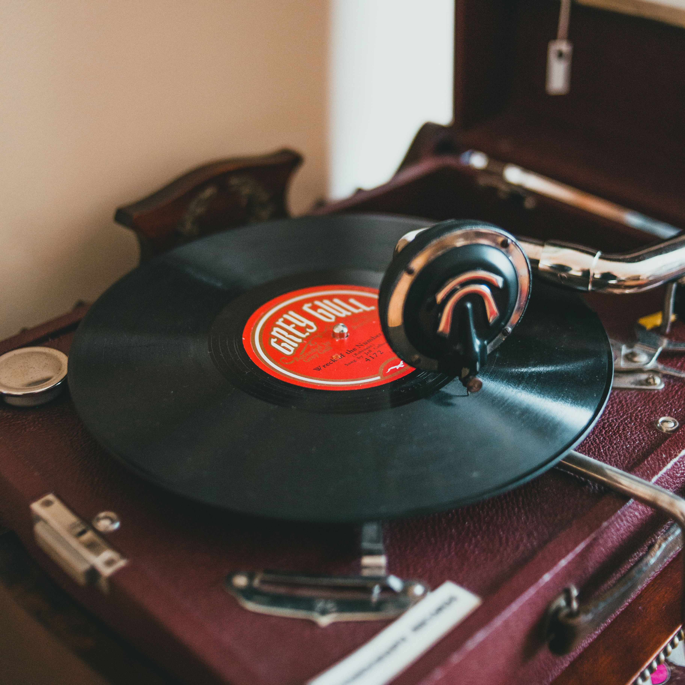

EST. 2026

At B-Side, we believe music is more than something you listen to. It's something you experience. From the crackle of a record hitting the turntable to the excitement of discovering a new favorite album, vinyl offers a listening experience unlike any other.
Our store offers a mix of well-known hits and hidden gems, giving music lovers the chance to revisit familiar favorites or discover something new. Whether you're searching for a popular album or an underrated record that deserves more recognition, B-Side has something for every kind of music fan.
B-Side is for music lovers of all kinds. We believe every album has something special to offer and that finding new music should always be exciting. Our goal is to make exploring records fun, welcoming, and personal.
Whether you're a longtime collector or just starting your vinyl journey, we want B-Side to be a place where everyone can explore their taste in music. From familiar classics to unexpected finds, there's always something new to discover, and we hope every visit leaves you with a record worth taking home.